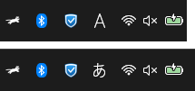
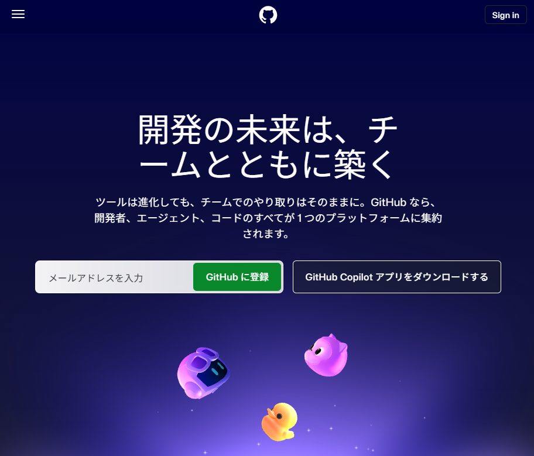
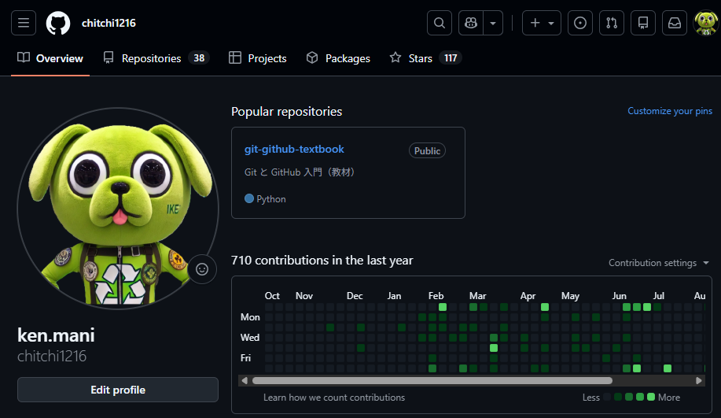
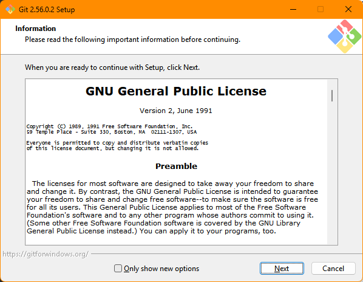
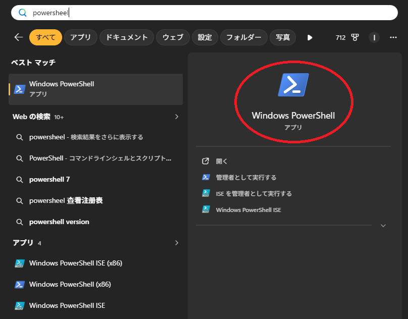
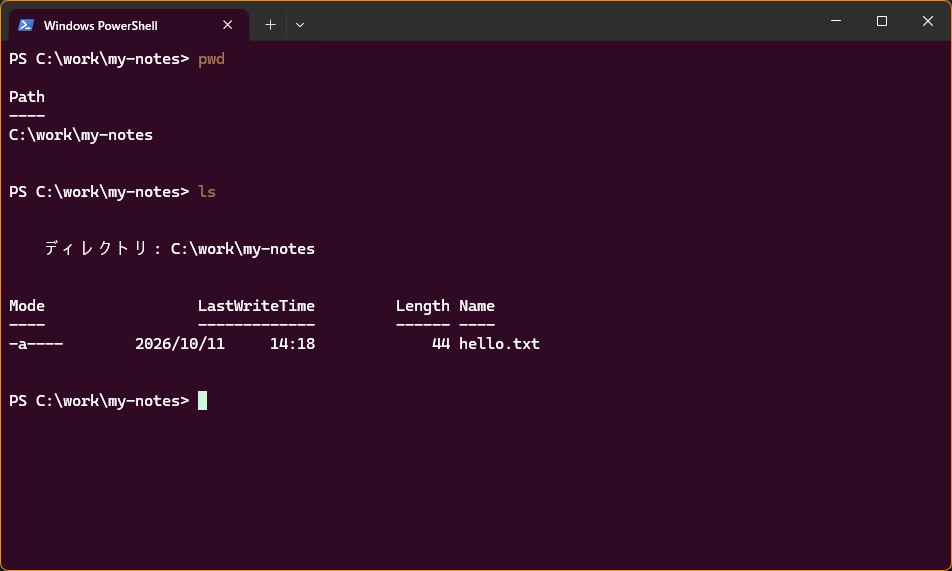
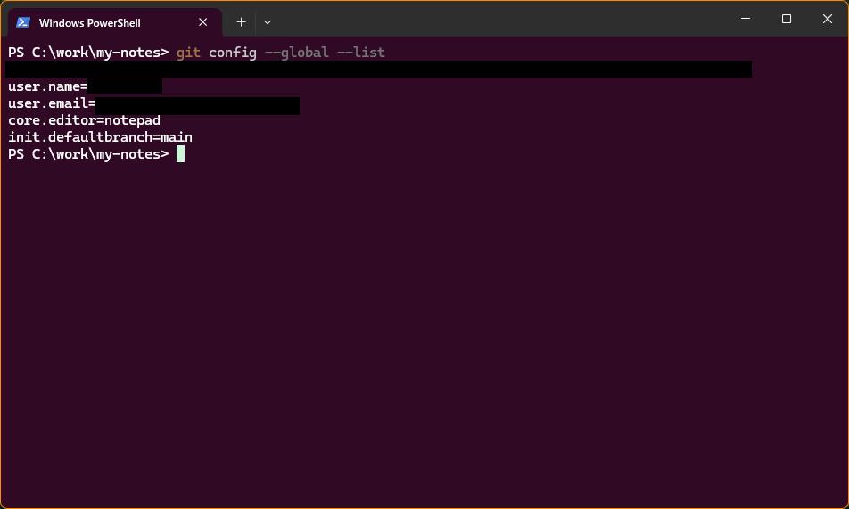
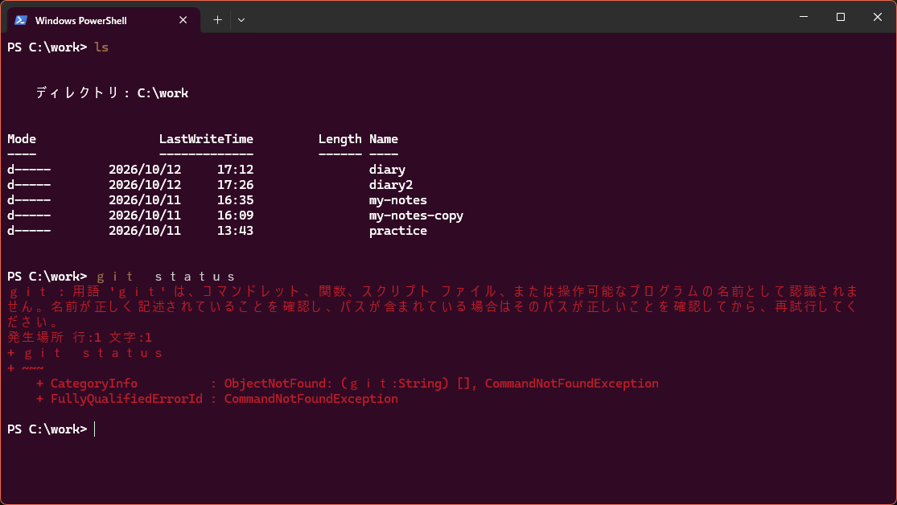

はじめに・準備
- この教材の目的、対象者、進め方が分かる
- GitHub のアカウントを作る
- Git をパソコンに入れ、「自分は誰か」を教える
0-1. この教材も、GitHub で作られています
最初に、ひとつ伝えておきます。この教材そのものが、GitHub を使って作られ、公開されています。あなたが今読んでいるページは、GitHub に置かれたファイルから作られています。
- ページの下の「ソースを見る」から、教材のファイルを見られます。
- 「変更の履歴を見る」から、いつ、誰が、何を変えたかを見られます。これが、Git の「履歴」の実物です。
- 学習が進んだら、この教材の誤字や分かりにくい説明を、自分で直して提案する練習（Pull Request）にも使う予定です。
今は、意味が分からなくて大丈夫です。「Git や GitHub は、こういうふうに実際に使われているんだな」と知っておいてください。
0-2. この教材でめざすこと（概要）
この教材は、まず一人で Git と GitHub を使いこなし、そのうえで、ほかの人と一緒にものづくり（共同開発）もできるようになることをめざします。プログラミングの経験がなくても、パソコンの基本から順番に進められるように作ってあります。一人でも、仲間と一緒でも学べます。
一人で使うだけでも、いつ・何を変えたかが記録に残り、いつでも前の状態に戻せるようになります。ほかの人と一緒に作るときは、誰が変えたかも記録し、みんなの変更をひとつにまとめることができます。それを担うのが Git と GitHub です。
最終ゴール
一人で（STEP 2）、次のことができるようになります。
- ファイルの変更を記録し、GitHub に置いて、毎日続ける
- 失敗しても、前の状態に戻す
- 試しの作業を別の枝（ブランチ）で進め、うまくいったら取り込む
ほかの人と一緒に（STEP 3）、次のことができるようになります。人数は問いません。
- 共有の置き場（GitHub のリポジトリ）に、自分の変更を送り、他の人の変更を取り込む
- Pull Request で他の人に確認してもらってから、変更を取り込む
- 同じ場所を変更して衝突（コンフリクト）しても、自分たちで解消する
0-3. 対象者
| 想定する人 | 前提にしないこと（なくて大丈夫） |
|---|---|
|
|
用意するもの
- Windows 11 のパソコン（Git をインストールできるもの。会社や学校のパソコンは、すぐ下の「会社や学校のパソコンで学ぶ人へ」を読んでください）
- インターネットに接続できる環境
- メールアドレス（GitHub のアカウント登録に使います）
会社や学校のパソコンで学ぶ人へ
会社や学校のパソコンは、ソフトのインストールに、管理者（情報システムの担当など）の許可が必要なことが多くあります。Git のインストール（0-9）で止まらないように、学習を始める前に、次の3つを確かめておきましょう。
- Git をインストールしてよいか。インストールの途中で「このアプリがデバイスに変更を加えることを許可しますか？」と出て、管理者のパスワードを求められたら、自分では進められません。下の見本を使って、申請してください。
- GitHub を開けるか。ブラウザで https://github.com を開いてみます。会社のネットワークの設定で、開けないことがあります。開けないときも、管理者に相談します。
- GitHub にファイルを置いてよいか（社内のルール）。会社によっては、外部のサービスにファイルを置くことに、決まりがあります。練習では、自分で書いた練習用の文章だけを使い、仕事のファイル、お客様の情報、社内の資料は、置かないでください。
申請するときは、次の見本を、自分の状況に合わせて書き換えて使ってください。
0-4. 学び方
- 基本は自習。各章は、およそ40〜70分で終わる量です。
- 仲間と学ぶ場合は、ときどき集まって、ディスカッションするのがおすすめです。各章の最後の「話し合おう・考えてみよう」を題材にします。一人で学ぶ場合は、同じ問いを、自分への質問として考え、答えをメモしてみてください。
- 使う道具は、Windows 11 に入っているものを中心にします。ターミナルは PowerShell、文章を書くのは「メモ帳」です。高機能なエディタ（VS Code）は、必要になってから導入します。
自分のペースで進めるために
- 一度に1章、終わらせなくて大丈夫です。各章の冒頭の「目安」は、一章を通して進めたときの時間です。章の途中には「ここで一区切りしてOK」という目印があります。10〜20分しか時間がない日は、目印まで進めば十分です。目印には、次に再開するときの戻り方も書いてあります。
- まずは、第4章までの「一周」を目標にします。第4章まで進むと、「記録する → GitHub に送る → 受け取る」が、ひととおりできるようになります。
- 必ずやるのは、各章の「実際にやってみよう」の手順です。「チャレンジ」「コーヒーブレイク」は、時間がなければ飛ばして構いません。あとから戻ってきて、取り組めます。
困ったときの、質問のしかた
うまくいかないときは、一人で長く悩まずに、質問してください。次の4つを書くと、相手に状況が伝わりやすく、早く解決します。
ターミナルの文字は、マウスでなぞって選び、右クリック（または Ctrl + C）でコピーできます。メールアドレスなど、人に見せたくない部分は、消してから送ってください。
教材の読み方：ボックスの色の意味
☕ コーヒーブレイク（読み飛ばしてOK）
本筋から少し離れた、豆知識の読み物です。読まなくても先へ進めますが、「なぜそうなっているのか」に興味がわいたら開いてみてください。
0-5. 事前アンケートは、終了しました
この教材では、学習を始める前に答えてもらう事前アンケートを行っていました。アンケートは、終了しました。これから学習を始める人は、答える必要はありません。
答えてくださった方、ありがとうございました。いただいた回答は、教材を良くするために使いました。
次の 0-6 に進んでください。
0-6. 準備の流れ
準備の前に：「半角英数」と「日本語」の切り替えを練習する
この教材では、コマンドを、キーボードから打ちます。コマンドは、必ず半角英数（入力モード「A」）で打ちます。日本語入力（入力モード「あ」）のままだと、文字やスペースが全角（幅の広い文字）になり、コマンドが動きません。ここで一度、メモ帳で練習しておきましょう。

- キーボードの
Windowsキーを押し、「メモ帳」と入力して、検索結果の「メモ帳」を選んで、Enter を押す - 画面右下（時計の左あたり）を見る。「A」か「あ」が表示されている
- キーボードの左上（
Escキーの下、数字の1の左）にある半角/全角キーを押す。押すたびに、「A」と「あ」が切り替わることを確かめる - 「A」にして、
git --versionと打ち、Enter を押す - 「あ」にして、同じキーを順に押す。ひらがなや、幅の広い文字が出て、下に線が付く（まだ確定していない状態）。
Escキーを何回か押すと、消える - もう一度「A」に戻す。メモ帳は、保存せずに閉じて構いません（「保存しますか？」と聞かれたら、「保存しない」）
| 入力モード | 打った結果の例 | コマンドとして |
|---|---|---|
| A（半角英数） | git --version | 動く |
| あ（日本語） | 「ぎｔ ーーヴぇｒしおん」のように、ひらがなや全角の文字になる | 動かない |
半角/全角 キーで切り替わらないとき
画面右下の「A」や「あ」の文字を、マウスでクリックしても、切り替えられます。それでも切り替わらないときは、メモ帳など、文字を打てる窓を一度クリックしてから、もう一度試してください（文字を打てる窓が選ばれていないと、表示が変わらないことがあります）。
0-7. 登場するものを先に知る
| 名前 | 一言でいうと |
|---|---|
| Git | ファイルの変更履歴を記録する道具。自分のパソコンの中で動く |
| GitHub | Git の記録をインターネット上に置いておくサービス。別のパソコンや、ほかの人とも共有できる |
| メモ帳 | 文字を書くための、Windows 標準のアプリ。この教材では、ファイルの編集に使う |
「Git」と「GitHub」は名前が似ていますが、別のものです。次の図で関係をつかんでください。
0-8. GitHub アカウントを作る
- ブラウザで https://github.com を開き、メールアドレスを入力して、「GitHub に登録」を押す（https://github.com/signup を直接開いてもよい）
- メールアドレス、パスワード、ユーザー名を入力する
- メールに届く確認コードを入力する

登録できると、自分のページ（プロフィール）ができます。ユーザー名が chitchi1216 なら、https://github.com/chitchi1216 が自分のページです。

0-9. Git をインストールする
- https://git-scm.com/download/win を開き、64-bit 版のインストーラーをダウンロードする
- ダウンロードしたファイルを開き、基本的に すべて初期設定のまま「Next」 を押して進める
- 最後に「Install」→「Finish」

0-10. 「自分は誰か」と「使うエディタ」を Git に教える
Git は変更を記録するとき、誰が変更したかも一緒に記録します。そのため、最初に名前とメールアドレスを登録します。あわせて、Git が文字の入力を求めるときに開くエディタを、メモ帳に設定します。
ここで初めて、ターミナルを使います。詳しい説明は第2章で行うので、今は「書かれた通りに打つ」だけで大丈夫です。
- キーボードの
Windowsキーを押し、「windows powershell」と入力して、検索結果から「Windows PowerShell」を選んで、Enter を押す - タブの付いた窓（Windows Terminal）が開き、文字を打つ画面が出る。これがターミナルです（色は、設定によって人それぞれです）

Windows キーを押して「windows powershell」と入力した画面。ベストマッチに「Windows PowerShell」が出ています見分け方：開いた窓のタブに「Windows PowerShell」と出ていれば、OK です。「PowerShell」だけのときは、一度閉じて、選び直します。
$PSVersionTable.PSVersion を打って、Major が 5 でも確かめられます。「PowerShell」（7）で進めても、ほとんどの手順は動きますが、表示が一部、教材と違うことがあります（たとえば、日本語の文字化けの様子）。

と表示されている" onerror="this.parentNode.classList.add('missing')">PS C:\…> は「プロンプト」といい、今いる場所を表します（第2章で説明します）。この写真は C:\work\my-notes にいる状態ですが、開いた直後は、C:\Users\自分の名前 などの場所です半角/全角 キーを押して切り替えます（0-6 の練習を参照）。名前の部分に日本語を入れるときだけ、一時的に日本語入力にします。
メールアドレスは、GitHub の「noreply アドレス」を使う
登録したメールアドレスは、これから作る記録（コミット）すべてに書き込まれます。公開リポジトリに送ると、誰でも見られます。公開されたアドレスを自動で集めるプログラムもあり、迷惑メールや詐欺メールが届く原因になります。
そこで、この教材では、ふだん使っているメールアドレスの代わりに、GitHub が用意している公開用の代わりのアドレス（noreply アドレス）を登録します。noreply アドレスでも、記録は、自分の GitHub アカウントに正しく結びつきます。先に、自分の noreply アドレスを調べます。
- ブラウザで GitHub にログインし、右上の自分のアイコンをクリックして、Settings を選ぶ
- 左のメニューから Emails を選ぶ
- 「Keep my email addresses private」にチェックを入れる
- そのすぐ下の説明文に出る、
12345678+chitchi1216@users.noreply.github.comのような形のアドレスをコピーする（数字、+、自分のユーザー名、@users.noreply.github.comの順。数字は人によって違います）
--global の設定は、パソコンのすべてのリポジトリで使われます。最初から noreply にしておけば、公開・非公開を気にせずに済みます。
次の3行を、1行ずつ入力して Enter を押します。1行目と2行目は、中身が違います。取り違えないでください。
| 行 | 設定する項目 | 「 」の中に入れるもの |
|---|---|---|
| 1行目 | user.name | 名前（ニックネームでよい。例：chitchi1216）。メールアドレスではありません |
| 2行目 | user.email | 上で調べた noreply アドレス（…@users.noreply.github.com）。ふだん使っているメールアドレスではありません |
| 3行目 | core.editor | そのまま（notepad） |
git config --global user.name "あなたの名前"
git config --global user.email "上で調べたnoreplyアドレス"
git config --global core.editor notepad何も表示されなければ成功です。続けて、設定を確認します。
git config --global --list次のように、入力した内容が表示されれば完了です（表示のイメージ）。
PS C:\Users\taro> git config --global --list user.name=chitchi1216 user.email=12345678+chitchi1216@users.noreply.github.com core.editor=notepad
git config --global --list の表示に、user.name=…、user.email=…、core.editor=notepad の3行すべてがあることを確認してください（ほかの行が混ざっていても構いません）。
user.nameにメールアドレスが入っている、またはuser.emailの行がないときは、1行目と2行目を取り違えています。正しい内容で、もう一度同じコマンドを打てば、上書きされます。user.emailがないと、第3章のcommitのとき、Committer: … configured automatically（「自動で設定されました」）という警告が出ます。記録は、できますが、名前やメールが正しく残りません。

user.name、user.email、core.editor=notepad の3行がそろっています（名前、メールアドレス、ほかの設定は、黒く塗りつぶしてあります）。この写真には、第3章で設定する init.defaultBranch=main の行もありますが、第0章の時点では、なくて構いませんgit と打って、次のような赤い文字が出たら、Git が見つかっていません。
git : 用語 'git' は、コマンドレット、関数、スクリプト ファイル、または操作可能なプログラムの名前として認識されません。名前が正しく記述されていることを確認し、パスが含まれている場合はそのパスが正しいことを確認してから、再試行してください。
発生場所 行:1 文字:1
+ git --version
+ ~~~
+ CategoryInfo : ObjectNotFound: (git:String) [], CommandNotFoundException
+ FullyQualifiedErrorId : CommandNotFoundException
PowerShell をいったん閉じて、開き直してから、もう一度試してください（インストールのあとは、開き直さないと、Git が見つからないことがあります）。それでもだめなら、表示されたエラーメッセージを、そのままインターネットで検索してみてください（仲間と学んでいる場合は、質問してください）。
これは、コマンドの名前を打ち間違えたときにも出る、同じ形のエラーです（たとえば
gitt と打つと、'gitt' として、同じ文言が出ます）。落ち着いて、綴りを確かめましょう。
gitの部分が全角（ｇｉｔ）になった：上と同じ「用語 'ｇｉｔ…' は、…認識されません」が出ます。'と'の間の文字が、幅の広い文字になっていることで見分けます。gitのあとが全角になった：Git から「… is not a git command」（Git のコマンドではありません）や、「unknown option」（知らないオプション）という英語の表示が出ます。- 名前を囲む
"が全角（”）になった：エラーは出ませんが、git config --global --listで見ると、名前に”が付いています。半角の"で、もう一度打てば、上書きされます。
半角/全角 キーで「A」に戻し、全部、打ち直します。キーボードの ↑ キーで前のコマンドを呼び出して直すより、打ち直すほうが確実です。

確認クイズ
Q1. Git と GitHub の違いは何ですか？
Git は変更履歴を記録する道具で、自分のパソコンの中で動く。GitHub は、その記録をインターネット上に置いて共有するサービス。
Q2. なぜ最初に名前とメールアドレスを登録するのですか？
Git が変更を記録するとき、誰が変更したかも一緒に記録するため。
Q3. コマンドを打つとき、日本語入力はどうしておくべきですか？
半角英数（入力モード「A」）にしておく。日本語入力のままだと、スペースや記号が全角になり、コマンドが動かなくなる。
話し合おう・考えてみよう
- インストールや設定で、つまずいたところはありましたか？
- GitHub のユーザー名はどんな基準でつけましたか？
- Git や GitHub を使って、やってみたいこと、不安なことは何ですか？